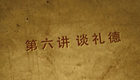

-
[第1课] 儒家道德引论
简介： 儒家是古代中国最重要的学派，其思想学说的核心与特点是崇德向善，以道德为本，塑造了中国文化的道德本位特质。 -
[第2课] 谈孝德
简介： 百善孝为先。孝有三种基本含义：尊祖敬宗，善事父母，生儿育女、传宗接代。如何行孝？养亲与敬亲、居常与侍疾、顺亲与谏亲、丧祭以礼、继志述事。另外也包括护身守身、忠君、尊老的衍伸规范。孝的伦理精神实质是爱、敬、忠、顺。 -

[第3课] 谈忠德
简介： 在家孝亲，在朝忠君，是传统中国人最为重要的两种伦理义务。忠既有臣对君忠的狭义，又有为民为人的广义。做人要忠诚老实，尽己利人。做事要敬笃从业，即主一专心、严肃认真、勤奋努力地对待工作与事业。忠德仍有其现代价值。 -
[第4课] 谈仁德
简介： 仁在儒家道德中不仅是一特殊道德，而且是全德之称。 -
[第5课] 谈义德
简介： 在日常生活中我们常常“仁义道德”连用，可见“义”德的重要性。如果说仁是情感，义则是理性，做人要“有情有义”。 -

[第6课] 谈礼德
简介： “不学礼，无以立”。我国自古以来就是礼义之邦，礼是“经国家，定社稷，序民人，利后嗣”的大宝。礼是协调人际关系、维持社会秩序的道德行为规范。礼是人的立身之本，分与和是礼的本质与目的，敬与让是礼的道德实质，内情与外行是礼的实践机制。 -

[第7课] 谈智德
简介： “知者乐水，仁者乐山。知者动，仁者静。知者乐，仁者寿。”必仁且智。智德就是道德的智慧与能力。中国之智重在人事之智，明人伦，知世故。“世事洞明皆学问，人情练达即文章。” 明是非、辨善恶；善识人、贵知己；识时势、知当务是传统智德之主要内容。智的现代实践：第一，好学崇知，提高智商。第二，以智求善，提高德商。第三，言说得当，行皆中矩。 -
[第8课] 谈信德
简介： 人无信不立，国无信不存。信德的含义：一是真诚无妄，二是心口一致，三是言行一致，四是行为始终一贯。信不仅是立政治国之本，人际和谐与处世之方，更是立身之本。实践信德的原则：首先，信必须符合于道义，而不可守违义之信；其次，不可轻诺；再次，说到做到。信德的当代实践：第一，认清市场经济与诚信建设的关系；第二，认识传统诚信与现代诚信的区别，努力实现美德与制度的统一；第三，培养诚信美德应成为公民的自觉行动。
- 学校：中国人民大学
- 讲师：肖群忠
- 集数：8
- 授课语言：中文
- 类型：中国大学视频公开课
课程简介：儒家道德是中华文化的核心与灵魂，孝、忠、仁、义、礼、智、信是儒家道德的核心价值与德目。厘清其历史原意和伦理实质，当代价值与实践途径，对于兴国立人，修身齐家、和群乐生、安身立命都具有重要价值。
热门跟帖
 2015-07-16 09:48:39
2015-07-16 09:48:39
不愧是人民大学的公开课，不愧是名校的教授，从讲课的内容来看，逻辑清晰，老师的素质涵养非常高，对中国的传统文化理解非常深刻，感谢网易，感谢人大，感谢肖老师。
顶[66] 踩[5] 回复 分享
2015-07-16 09:48:39
不愧是人民大学的公开课，不愧是名校的教授，从讲课的内容来看，逻辑清晰，老师的素质涵养非常高，对中国的传统文化理解非常深刻，感谢网易，感谢人大，感谢肖老师。
顶[66] 踩[5] 回复 分享
2015-07-16 09:48:39
不愧是人民大学的公开课，不愧是名校的教授，从讲课的内容来看，逻辑清晰，老师的素质涵养非常高，对中国的传统文化理解非常深刻，感谢网易，感谢人大，感谢肖老师。
顶[66] 踩[5] 回复 分享
2015-07-16 09:48:39
不愧是人民大学的公开课，不愧是名校的教授，从讲课的内容来看，逻辑清晰，老师的素质涵养非常高，对中国的传统文化理解非常深刻，感谢网易，感谢人大，感谢肖老师。
顶[66] 踩[5] 回复 分享